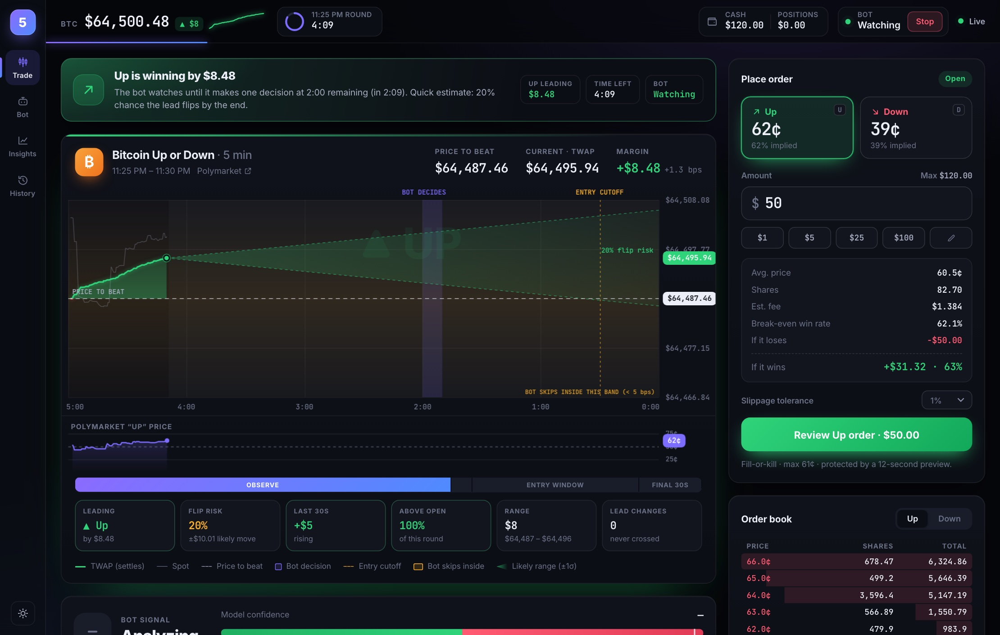
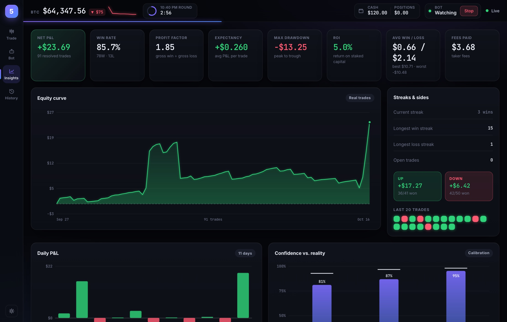

Bitcoin trading that runs on math.
Five watches every Bitcoin round on Polymarket and only trades when the numbers are strongly on its side.
Set it up on your own computer.
Four steps, a few minutes. Five and your keys never leave your machine.
Patient by design.
Most rounds, Five does nothing. It waits for the few where the numbers are clearly on its side.
-
Gains set aside
Profits are moved out of the trading pot so they aren’t put back at risk.
-
You’re in charge
Start and stop with one button, or place your own trades any time.
-
Private and yours
Your funds stay in your Polymarket account. Your keys stay on your computer.
-
Every move recorded
Each round is logged with what Five decided and why.
Everything in one dashboard.
The live round, what Five decided, and how you’re doing.


The live round against the price to beat, with Five’s decision and one-click controls.
Real money. Real results.
Results from Five’s live trading.
Small sample from live trading. Past results don’t guarantee future results, and you can lose money.